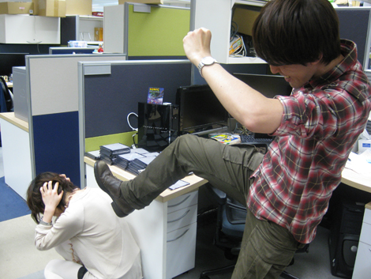

『開発者を越えろ!? スタッフ からの挑戦企画予告！』
2009年03月09日
3月某日の昼下がり。
マツバラとヨシノの2人は
『SWA』昼ステージのレベルデザインを担当した先輩社員と
まったりとお喋りに興じていた。
【登場先輩その1：井上】
『SWA』チュンナン昼ステージなどを担当した、クールな『SWA』スタッフ。
硬派な態度の内に熱いハートを秘めたヘビーゲーマー。
【登場先輩その2：姥】
『SWA』EU昼ステージなどを担当した、ノリのいい『SWA』スタッフ。
アウトドア、特撮、お酒など、その趣味は多岐にわたる。
やー、早いもので
発売日からもう3週間ですね。PS3版/Xbox360『SWA』。
姥 ：そうだね～。
去年の今頃は、ここいいる全員が
『SWA』開発に必死でしたよね。
そう考えると、感慨深いです！
井上 ：そういや、2人とも、ブログ続いてるな。
あ、ご覧頂けてます？
頑張ってますよ～♪
更新のネタ、ください。
井上 ：ネタっつってもな……。
姥 ：やっぱ、ユーザーの皆さんのメールから
多かった要望に応えていくのがいいんじゃない？
井上 ：一番多い要望って何だ？
「マツバラ・ヨシノのベストタイムが知りたい」
「スタッフのベストタイムが知りたい」ってやつですね。
やっぱり「ソニック」ですからね。
熱い「ソニック」ユーザーはタイムが一番気になると思います。
…………。
井上 ：つーか、ヨシノ、この前の記事見たけど、
あのタイムはねーだろ！
恥ずかしいっつの！
ひぃ！

井上 ：お前どんだけバグチェックしたんだよ！？
それであのタイムか！
お、お～た～す～け～。
姥 ：まあまあ。
でも、オレたちならタイム晒してもいいんじゃないっすか？
オレもタイムアタック合戦に参加したい(笑)
井上 ：うーん、そうね。要望が多いなら。
ほ、本当ですか！
井上 ：ステージを作ったスタッフからユーザーへの挑戦状！
お、なかなか燃えるシチュエーションじゃね？
姥 ：創造主を超えろ！ ってやつだね(笑)
作ったステージの攻略情報なんかも載せていこうか。
じゃあ、アポトスステージを担当した岡田さんも連れてこよう！
そ、それは……
なんて燃える企画！ ありがとうございます！
わーい♪
ラクして更新できる。
井上 ：ただし、ヨシノ。お前もだ。
……え。
井上 ：あのタイムは許せん。
めっちゃめちゃ練習してこい。
その上で、まずはヨシノのタイムをユーザーへの挑戦状にして、
それから段階的に、難しいステージの挑戦状を……
姥 ：おおー。ボスが順番に出てくるなんて
少年漫画的展開だね！
ままままま待ってください。
あの……
いいですね、やりましょう！
うふふ、ヨシノが青くなってるの、面白い♪
こ、このやろう！
井上 ：決定だな。
じゃあ、撮影日が決まったら教えて。
姥 ：ヨシノ、がんばれ！ できる、できる！
ひ……
ひ―――！！
突発企画☆ ユーザーへの挑戦状！
『SWA』PS3版/Xbox360版発売を記念して、
各アクションステージの制作を担当した『SWA』スタッフ自らが攻略ポイントを解説し、最後に自らのベストタイムを公開します！
それでは皆さま、是非ともお楽しみに！
まずはヨシノかな……？
練習の結果、どこまでタイムを縮められるのでしょうか！
当企画は、3月下旬に発動予定です！
皆さま、しばしお待ちを～！！
日時: 2009年03月09日 20:00 | パーマリンク
 RSS
RSS